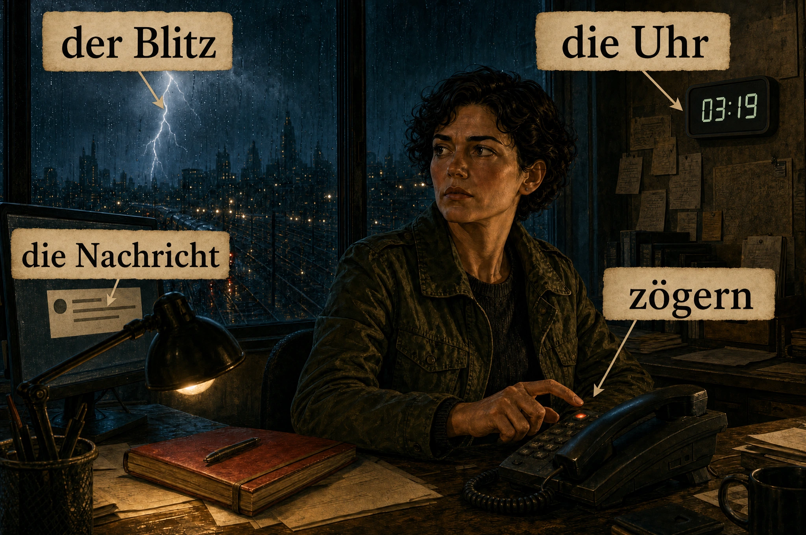
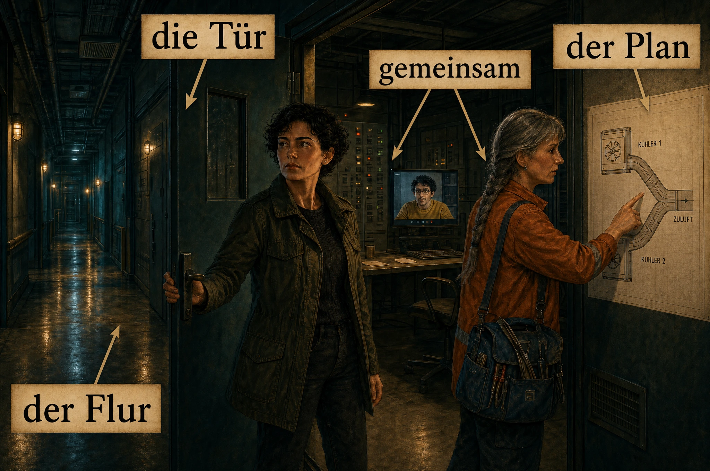
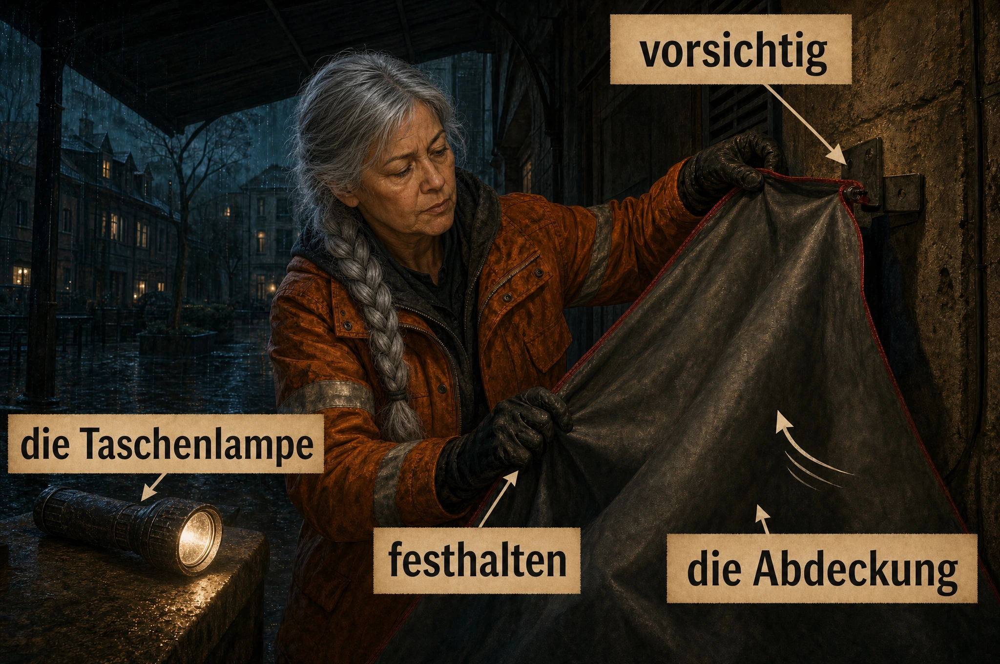
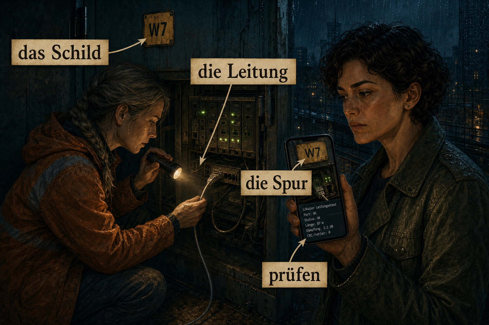
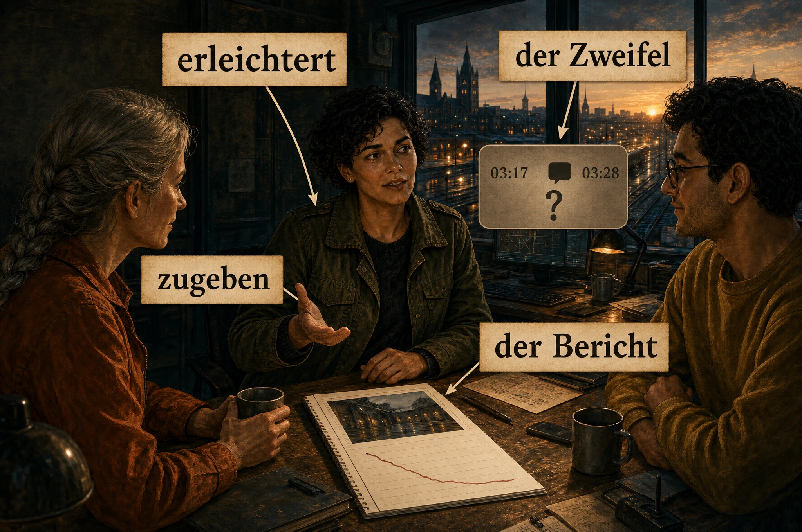

Die Nachrichten von morgen · Buch 01
Die Nachricht um 03:17
Deutsch · B1/B2
Falkenbrück, Herbst 2045. Mira Winter kennt die Geräusche einer Nachtschicht: Lüfter, Regen, einen Löffel in einer Tasse. Doch heute erreicht sie eine Nachricht, die es nicht geben dürfte. Elf Minuten können sehr kurz sein. Besonders dann, wenn man zu lange versucht, allein die richtige Antwort zu finden.
Show EnglishHide English
Falkenbrück, autumn 2045. Mira Winter knows the sounds of a night shift: fans, rain, a spoon in a cup. But tonight a message reaches her that should not exist. Eleven minutes can be very short. Especially when you spend too long trying to find the right answer alone.
Kapitel 1
Elf Minuten
Um 03:17 erschien auf Miras Bildschirm eine Nachricht: »Kühlung West. Alarm um 03:28. Zugang über den Hof freihalten.« Darunter stand ihre eigene Warteschlange als Empfänger. Mira stellte die Tasse ab. Im Westbereich liefen die Geräte, die das Netz am Fluss versorgten. Auch Ruth arbeitete dort draußen. Vor zehn Minuten hatte sie noch ein Foto von ihren völlig nassen Schuhen geschickt.
Show EnglishHide English
At 03:17 a message appeared on Mira’s screen: ‘West cooling. Alarm at 03:28. Keep access through the courtyard clear.’ Below it, her own queue was listed as the recipient. Mira put down her cup. The equipment supplying the network by the river was running in the west area. Ruth was also working outside there. Ten minutes ago she had sent a photo of her completely soaked shoes.
Ein Blitz machte die Fenster der Nachtwache weiß. Für einen Moment sah Mira nur ihr Spiegelbild: kurze dunkle Locken, müde Augen, der silberne Ohrstecker. Dann waren die Anzeigen wieder da. Alle grün. Die Nachtwache war ihr Betriebsraum über den Gleisen, kein besonders gemütlicher Ort. Trotzdem hatte sie sich hier bisher sicher gefühlt. Sie kannte jeden normalen Alarmton. Diese Nachricht war ohne Ton gekommen.
Show EnglishHide English
A flash of lightning turned the Nachtwache’s windows white. For a moment Mira saw only her reflection: short dark curls, tired eyes, the silver ear stud. Then the displays were back. All green. The Nachtwache was their operations room above the tracks, not a particularly cosy place. Even so, she had felt safe here until now. She knew every normal alarm sound. This message had arrived without a sound.
Deniz saß am anderen Ende des Raums und versuchte, einen Automatenkeks aus seiner Verpackung zu befreien. »Eine Schere wäre keine Niederlage«, sagte Mira. »Es geht um Würde«, antwortete er. Sie wollte ihm die Nachricht zeigen. Dann sah sie den Eingangsweg: W7-ALT. Laut dem Plan war dieser Wartungsweg seit Jahren abgeschaltet. Vielleicht war das nur ein alter Test. Sie wollte erst sicher sein.
Show EnglishHide English
Deniz was sitting at the other end of the room, trying to free a vending-machine biscuit from its wrapper. ‘Scissors wouldn’t be a defeat,’ Mira said. ‘This is about dignity,’ he replied. She wanted to show him the message. Then she saw the incoming route: W7-ALT. According to the diagram, this maintenance route had been switched off for years. Perhaps it was only an old test. She wanted to be certain first.
Sie öffnete den vollständigen Eingang und speicherte eine Kopie. Kein Anhang, kein Link, keine Aufforderung, irgendeinen Befehl auszuführen. Nur drei kurze Zeilen und eine Kennung: ECHO. Der Name sagte ihr nichts. Im Empfangsprotokoll stand 03:17. Im Text stand 03:28. Sie rieb mit dem Daumen über den Rand ihres roten Notizbuchs und schrieb beide Zeiten auf.
Show EnglishHide English
She opened the complete incoming message and saved a copy. No attachment, no link, no request to run any command. Just three short lines and an identifier: ECHO. The name meant nothing to her. The receive log said 03:17. The text said 03:28. She rubbed her thumb along the edge of her red notebook and wrote down both times.
Früher hätte sie Jonas gefragt. Er hätte erst zugehört und dann eine unbequeme Frage gestellt. Seit ihr früherer Mentor verschwunden war, hörte sie seine Fragen manchmal im Kopf. Antworten bekam sie keine. Sie hatte lange genug erlebt, wie aus einem Verdacht im Büro eine angebliche Tatsache wurde. Diesmal wollte sie niemanden wegen einer seltsamen Zeile aus dem Regen holen.
Show EnglishHide English
In the past she would have asked Jonas. He would have listened first and then asked an uncomfortable question. Since her former mentor had disappeared, she sometimes heard his questions in her head. She got no answers. She had seen often enough how a suspicion in the office became a supposed fact. This time she did not want to bring anyone in from the rain because of one strange line.
Die Uhr über der Tür zeigte 03:19. Mira prüfte die Temperaturen. Der Westbereich war etwas wärmer als vor einer halben Stunde, aber noch unter dem Grenzwert. Beide Kühlgeräte meldeten Betrieb. Der Hof lag auf Ruths Weg zurück. Ein Anruf wäre einfach gewesen. Mira zögerte trotzdem. Sie suchte lieber nach dem letzten abgeschlossenen Test mit der Kennung W7.
Show EnglishHide English
The clock above the door showed 03:19. Mira checked the temperatures. The west area was a little warmer than half an hour ago, but still below the limit. Both cooling units reported that they were running. The courtyard was on Ruth’s way back. A call would have been easy. Mira hesitated anyway. Instead, she searched for the last completed test with the W7 identifier.


Sie fand keinen. Dafür stand im Arbeitsplan dieser Nacht ein Eintrag: »Alte Vermittlung 7, Stromversorgung nach Sturmschaden wiederherstellen.« Der zuständige Dienst hatte die Arbeit um 03:14 als erledigt gemeldet. Drei Minuten später war die Nachricht angekommen. Mira setzte einen Kreis um den Eintrag. Das bewies noch keine Verbindung. Aber plötzlich passte der abgeschaltete Weg nicht mehr zu ihrer Vorstellung von einem harmlosen alten Test.
Show EnglishHide English
She found none. Instead, that night’s work schedule contained an entry: ‘Old Exchange 7, restore power after storm damage.’ The responsible service had reported the work completed at 03:14. Three minutes later the message had arrived. Mira circled the entry. That did not yet prove a connection. But suddenly the disconnected route no longer fitted her idea of a harmless old test.
Neben der Tasse lag Ruths Foto noch auf dem Telefon. Auf dem nassen Schuh war eine kleine gelbe Blume zu sehen, die jemand auf den Gummi gemalt hatte. Ruths Enkelin hatte das getan, hatte sie am Abend erzählt. Mira sah wieder zur Nachricht. Sie wollte Ruth nicht unnötig beunruhigen. Aber wenn die Warnung stimmte, war Schweigen auch eine Entscheidung. Keine besonders gute.
Show EnglishHide English
Beside the cup, Ruth’s photograph was still on the phone. A small yellow flower someone had painted on the rubber could be seen on the wet shoe. Ruth’s granddaughter had done it, she had said that evening. Mira looked back at the message. She did not want to worry Ruth unnecessarily. But if the warning was true, silence was a decision too. Not a particularly good one.
Neben ihr knackte es laut. Deniz hatte gewonnen; die Hälfte des Kekses lag auf dem Boden. Er sah ihren Bildschirm und hörte auf zu lächeln. »Was ist um halb vier?« Mira drehte sich zu ihm. »Vielleicht nichts. Vielleicht ein Problem mit der Kühlung.« Sie hörte selbst, wie wenig diese Antwort half. Dann schob sie den Stuhl zur Seite. »Ich zeige dir alles. Und wir rufen Ruth an.«
Show EnglishHide English
There was a loud crack beside her. Deniz had won; half the biscuit was on the floor. He saw her screen and stopped smiling. ‘What happens at half past three?’ Mira turned to him. ‘Perhaps nothing. Perhaps a cooling problem.’ She could hear herself how little that answer helped. Then she pushed her chair aside. ‘I’ll show you everything. And we’ll call Ruth.’
Kapitel 2
Zwei Geräte, ein Weg
Ruth nahm sofort ab. Hinter ihrer Stimme schlug Regen gegen Metall. »Ich stehe noch am Tor. Der Lieferwagen versperrt den halben Hof.« Mira las ihr die Nachricht vor, ohne die seltsame Zeit zu verschweigen. Ruth fragte nicht, ob Mira müde sei. »Gut. Ich lasse den Wagen wegfahren und sehe mir die Anlage an. Schick mir den Eingang, nicht nur deine Zusammenfassung.«
Show EnglishHide English
Ruth answered immediately. Behind her voice, rain beat against metal. ‘I’m still by the gate. The delivery van is blocking half the courtyard.’ Mira read the message to her without leaving out the strange time. Ruth did not ask whether Mira was tired. ‘All right. I’ll have the van moved and look at the system. Send me the incoming message, not just your summary.’
Deniz zog die runde Brille höher und öffnete die Verlaufskurven. Mira nahm den lokalen Kontrollplatz im Westbereich hinzu. Dort konnte sie die Anlage sehen und Ruth treffen; Deniz sollte in der Nachtwache bleiben. »Wir ändern nichts auf Zuruf dieser Nachricht«, sagte sie. »Erst prüfen wir die wirkliche Anlage.« Er nickte. »Eine unbekannte Nachricht bekommt bei mir nicht einmal einen Gastzugang.«
Show EnglishHide English
Deniz pushed his round glasses up and opened the trend graphs. Mira brought up the local control station in the west area as well. She could see the system there and meet Ruth; Deniz would stay in the Nachtwache. ‘We won’t change anything just because this message tells us to,’ she said. ‘First we check the actual system.’ He nodded. ‘An unknown message doesn’t even get guest access from me.’
Der Flur zum Westbereich war schmal und roch nach frischer Farbe. Mira ging schnell, ihre olivgrüne Jacke über dem Arm. Hinter einer Tür summten die Netzgeräte. Hinter der nächsten lag der Kontrollraum der Haustechnik. Sie blieb vor dem Fenster stehen. Zwei Kühlgeräte, zwei grüne Lichter. Von hier aus sah alles ordentlich aus. Genau das machte die Sache so unangenehm.
Show EnglishHide English
The corridor to the west area was narrow and smelled of fresh paint. Mira walked quickly, her olive jacket over her arm. Network equipment hummed behind one door. Behind the next was the building-services control room. She stopped in front of the window. Two cooling units, two green lights. From here everything looked orderly. That was exactly what made the situation so uncomfortable.
Ruth kam durch den Hofeingang herein. Ihre silberne Flechte klebte an der orangefarbenen Arbeitsjacke. Sie stellte die blaue Werkzeugtasche ab und sah auf den Plan an der Wand. »Woher bekommen beide Geräte ihre Luft?« Mira deutete auf zwei Linien. »Getrennte Geräte.« Ruth sah sie an. »Das habe ich nicht gefragt.« Mira folgte den Linien weiter. Am Rand des Blatts verschwanden sie im selben grauen Rechteck.
Show EnglishHide English
Ruth came in through the courtyard entrance. Her silver braid was stuck to her orange work jacket. She put down the blue tool bag and looked at the diagram on the wall. ‘Where do both units get their air?’ Mira pointed to two lines. ‘Separate units.’ Ruth looked at her. ‘That wasn’t my question.’ Mira followed the lines further. At the edge of the sheet, they disappeared into the same grey rectangle.
Auf dem Übersichtsbild in der Nachtwache war dieses Rechteck nicht zu sehen. Hier stand klein »gemeinsamer Ansaugkanal«. Mira fotografierte die Zeichnung für Deniz. Er schwieg kurz am Telefon. Dann sagte er: »Zwei grüne Lichter und ein gemeinsamer Hals.« Ruth zog ihre Handschuhe an. »Dann sehen wir nach, ob dieser Hals frei ist.« Draußen rüttelte der Wind an der Tür. Mira hielt sie fest, während Ruth die Tasche aufnahm.
Show EnglishHide English
That rectangle was not visible on the overview in the Nachtwache. Here, in small lettering, it said ‘shared intake duct’. Mira photographed the drawing for Deniz. He was silent on the phone for a moment. Then he said, ‘Two green lights and one shared throat.’ Ruth put on her gloves. ‘Then let’s see whether that throat is clear.’ Outside, the wind shook the door. Mira held it while Ruth picked up the bag.
Ruth kniete kurz vor dem unteren Kontrollfenster. »Hörst du den Unterschied?«, fragte sie. Mira hörte ein unruhiges Pfeifen unter dem gleichmäßigen Motorgeräusch. Ruth deutete auf den gemeinsamen Kanal. »Die Motoren laufen. Ob genug Luft ankommt, sagt uns ihr grünes Licht nicht.« Mira notierte das Geräusch für die Haustechnik. Die Übersicht zeigte Zustände. Ruth suchte nach dem, was wirklich zwischen den Geräten geschah.
Show EnglishHide English
Ruth knelt briefly in front of the lower inspection window. ‘Can you hear the difference?’ she asked. Mira heard an uneven whistling beneath the steady motor sound. Ruth pointed to the shared duct. ‘The motors are running. Their green light doesn’t tell us whether enough air is getting through.’ Mira noted the sound for building services. The overview showed states. Ruth was looking for what was actually happening between the units.
Es war 03:26. Deniz meldete, dass die Temperatur jetzt schneller stieg. Die laufenden Lüfter allein bewiesen keinen ausreichenden Luftstrom. Mira wollte Ruth in den Hof folgen, doch Ruth hob die Hand. »Der Zugang ist mein Bereich. Du bleibst am Kontrollplatz und hältst die Verbindung. Sonst stehen wir gleich beide draußen und wissen nicht, was drinnen passiert.« Mira öffnete den Mund und schloss ihn wieder. Ruth hatte recht.
Show EnglishHide English
It was 03:26. Deniz reported that the temperature was now rising faster. Running fans alone did not prove there was enough airflow. Mira wanted to follow Ruth into the courtyard, but Ruth raised her hand. ‘Access is my area. You stay at the control station and keep us connected. Otherwise we’ll both be outside in a moment with no idea what’s happening inside.’ Mira opened her mouth and closed it again. Ruth was right.
Gemeinsam legten sie die nächsten Schritte fest. Deniz bereitete die freigegebene Verlagerung eines Teils der Netzlast vor. Mira sollte die örtlichen Werte beobachten und mit der Haustechnik sprechen. Ruth würde nur den geschützten Zugang prüfen; bei losen Teilen über dem Hof musste sie zurück. Sie kannten solche Abläufe. Neu war, dass Mira keine Erklärung für den Anfang hatte und trotzdem eine klare Entscheidung treffen musste.
Show EnglishHide English
Together they agreed on the next steps. Deniz prepared the approved transfer of part of the network load. Mira would watch the local readings and speak with building services. Ruth would check only the sheltered access; if there were loose parts above the courtyard, she had to come back. They knew procedures like these. What was new was that Mira had no explanation for the beginning and still had to make a clear decision.


Um 03:28 erklang der Alarm. Das rote Licht über dem Kontrollplatz blinkte, und das Telefon in Miras Hand vibrierte. »Kühlung West: Temperaturgrenze überschritten.« Sie starrte einen Augenblick auf die Uhr. Dann drückte sie die Sprechtaste. »Alarm bestätigt. Wir machen weiter wie besprochen.« Ihr Herz schlug schnell. Die Nachricht hatte recht gehabt. Das war jetzt weniger wichtig als die Menschen, die auf ihre nächste Antwort warteten.
Show EnglishHide English
At 03:28 the alarm sounded. The red light above the control station flashed, and the phone in Mira’s hand vibrated. ‘West cooling: temperature limit exceeded.’ She stared at the clock for a moment. Then she pressed the talk button. ‘Alarm confirmed. We continue as agreed.’ Her heart was beating fast. The message had been right. That now mattered less than the people waiting for her next answer.
Kapitel 3
Unter dem Vordach
»Ich bin unter dem Vordach«, sagte Ruth. »Hier ist es sicher. Aber ich sehe etwas vor dem unteren Gitter.« Auf ihrem Kamerabild lief Regen in schrägen Linien über den Hof. Ihre zerkratzte Taschenlampe beleuchtete ein breites Stück grauen Stoff. Bei jedem Windstoß hob es sich ein wenig und legte sich wieder an das Gitter. Mira erkannte einen dunklen roten Rand.
Show EnglishHide English
‘I’m under the canopy,’ Ruth said. ‘It’s safe here. But I can see something in front of the lower grille.’ In her camera image, rain ran in slanting lines across the courtyard. Her scratched torch lit up a broad piece of grey fabric. With every gust it lifted a little and settled against the grille again. Mira recognised a dark red edge.
Am Nachmittag hatte eine Firma an der Hofwand gearbeitet. Die graue Abdeckung hatte ihre Geräte vor Staub geschützt. Mira erinnerte sich an das Bild im Arbeitsbericht: sauber gefaltet, mit roten Rändern. Nun hing ein Ende zwischen einer Stütze und dem Ansauggitter. Der Sturm musste die schlecht befestigte Plane dorthin gezogen haben. Kein geheimer Angriff. Etwas sehr Gewöhnliches, am falschen Ort und zur falschen Zeit.
Show EnglishHide English
That afternoon a contractor had worked on the courtyard wall. The grey cover had protected its equipment from dust. Mira remembered the image in the work report: neatly folded, with red edges. Now one end was hanging between a support and the intake grille. The storm must have pulled the poorly secured tarpaulin there. No secret attack. Something very ordinary, in the wrong place at the wrong time.
Ruth zog nicht sofort daran. »Das sitzt unter Spannung. Ich brauche den Ansaugbereich ausgeschaltet, bevor ich an die Wartungsöffnung gehe.« Die zuständige Technikerin der Haustechnik war inzwischen am Kontrollplatz. Sie prüfte Ruths Standort und den Ablauf. Mira gab Deniz das vereinbarte Zeichen. Er begann, die vorbereitete Netzlast zu verlagern. Auf dem Bildschirm wanderten Verbindungen aus dem warmen Bereich. Die Kunden sollten davon möglichst wenig merken.
Show EnglishHide English
Ruth did not pull at it immediately. ‘It’s under tension. I need the intake area switched off before I go to the maintenance opening.’ The building-services technician responsible was now at the control station. She checked Ruth’s position and the procedure. Mira gave Deniz the agreed signal. He began transferring the network load he had prepared. On the screen, connections moved out of the warm area. Customers should notice as little as possible.
Eine Gruppe wollte nicht mit. Deniz meldete einen Dienst, der den vorgesehenen Wechsel ablehnte. Mira kannte seinen Eigentümer und rief die Bereitschaft an. Während es klingelte, erschien eine neue Temperaturmessung. Noch höher. Sie spürte den Wunsch, einfach irgendetwas auszuschalten. Stattdessen erklärte sie knapp die Lage und bat um den geprüften Ersatzweg. Am anderen Ende wurde jemand sehr schnell sehr wach.
Show EnglishHide English
One group would not move. Deniz reported a service that was refusing the planned switch. Mira knew its owner and called the on-call contact. While the phone rang, a new temperature reading appeared. Higher again. She felt the urge simply to switch something off. Instead, she explained the situation briefly and asked for the tested alternative route. At the other end, someone became very awake very quickly.
»Ich habe vorhin Zeit verloren«, sagte Mira zu Deniz, als die Verbindung stand. »Ich habe allein nach einem alten Test gesucht.« Sie wartete auf eine Frage oder einen Vorwurf. Deniz sagte nur: »Dann verschwenden wir jetzt keine Zeit damit, dich dafür fertigzumachen. Der Ersatzweg ist frei.« Mira atmete aus. Sie gab die Verlagerung frei und sah zu, wie die letzte große Last den Westbereich verließ.
Show EnglishHide English
‘I lost time earlier,’ Mira told Deniz once the connection was established. ‘I searched for an old test on my own.’ She waited for a question or a reproach. Deniz only said, ‘Then let’s not waste time now beating you up about it. The alternative route is clear.’ Mira breathed out. She authorised the transfer and watched the last large load leave the west area.
Die Haustechnikerin stoppte die betroffene Anlage und sicherte sie für die Arbeit. Ruth bestätigte die Freigabe vor Ort. Erst dann öffnete sie den vorgesehenen Zugang. »Vorsichtig«, hörte Mira sie sagen. Es klang, als spreche Ruth mit der Plane. Ein Stück Stoff löste sich, dann blieb es an der Stütze hängen. Ruth musste es dort festhalten, damit der Wind es nicht in den Hof zurückriss.
Show EnglishHide English
The building-services technician stopped the affected system and secured it for the work. Ruth confirmed the clearance on site. Only then did she open the designated access. ‘Carefully,’ Mira heard her say. It sounded as if Ruth was talking to the tarpaulin. A piece of fabric came free, then caught on the support. Ruth had to hold it there so the wind would not tear it back into the courtyard.
Vom Hof kam ein kurzes Klopfen. Ruth bat Mira, ihren Sprechkanal offen zu lassen. »Erzähl mir einfach die Werte. Dann höre ich auch, dass du noch da bist.« Mira las die nächste Messung vor, langsam und deutlich. Zum ersten Mal verstand sie, dass eine ruhige Stimme bei dieser Arbeit ebenso nützlich sein konnte wie ein sauberer Plan. Sie konnte gerade nichts anfassen. Trotzdem konnte sie helfen.
Show EnglishHide English
A brief knocking sound came from the courtyard. Ruth asked Mira to keep her voice channel open. ‘Just tell me the readings. Then I can hear that you’re still there too.’ Mira read out the next measurement, slowly and clearly. For the first time she understood that a calm voice could be as useful in this work as a clear diagram. She could not touch anything just then. Even so, she could help.
Mira sah auf die Werte. Ohne die normale Kühlung stieg die Temperatur weiter, aber langsamer. Die reduzierte Last gab ihnen Zeit. »Wie lange?«, fragte sie. »Noch einen Moment«, sagte Ruth. Im Kamerabild erschien ihre orangefarbene Schulter. Dann verschwand die graue Fläche vor dem Gitter. Ruth legte die Plane in eine leere Materialkiste und sicherte den Deckel. »Frei. Und diesmal fliegt das Ding nicht wieder los.«
Show EnglishHide English
Mira looked at the readings. Without normal cooling, the temperature kept rising, but more slowly. The reduced load was buying them time. ‘How long?’ she asked. ‘One more moment,’ Ruth said. Her orange shoulder appeared in the camera image. Then the grey surface in front of the grille disappeared. Ruth put the tarpaulin in an empty materials box and secured the lid. ‘Clear. And this time the thing won’t take off again.’


Nach Ruths Rückmeldung und der Kontrolle des Zugangs startete die Haustechnikerin die Anlage wieder. Es war 03:33. Die erste Messung änderte sich kaum. Bei der zweiten hielt Mira unbewusst den Atem an. Bei der dritten sank die Temperatur. »Luftstrom wieder normal«, sagte die Technikerin. Ruth kam durch die Tür, nass bis auf die Haut. Mira reichte ihr ihre trockene Jacke. Diesmal versuchte sie nicht, noch etwas allein zu erledigen.
Show EnglishHide English
After Ruth’s report and the access check, the building-services technician restarted the system. It was 03:33. The first reading barely changed. At the second, Mira held her breath without realising it. At the third, the temperature fell. ‘Airflow normal again,’ the technician said. Ruth came through the door, soaked to the skin. Mira handed her her dry jacket. This time she did not try to do anything else alone.
Kapitel 4
Das gelbe Licht
Eine Viertelstunde später waren die Werte stabil. Keine Geräte waren beschädigt, kein Dienst war ausgefallen. Deniz ließ die Last zunächst auf dem Ersatzweg. Die normale Verteilung konnte bei Tageslicht zurückkehren, nach einer weiteren Prüfung. Mira unterschrieb die örtliche Übergabe an die Haustechnik. Unter Ursache schrieb sie: »Gemeinsamer Lufteinlass durch lose Abdeckung blockiert.« Der Satz war kurz genug für ein Formular. Die Nacht passte nicht hinein.
Show EnglishHide English
A quarter of an hour later the readings were stable. No equipment was damaged, no service had failed. Deniz kept the load on the alternative route for the time being. Normal distribution could return in daylight, after another check. Mira signed the local handover to building services. Under cause she wrote: ‘Shared air inlet blocked by loose cover.’ The sentence was short enough for a form. The night did not fit into it.
Ruth trug Miras olivgrüne Jacke über den Schultern. »Jetzt die andere Hälfte«, sagte sie. »Wo kam die Nachricht her?« Mira öffnete den Plan auf ihrem Gerät. W7-ALT endete an einem grauen Kästchen mit einem Kreuz darüber. Ruth betrachtete es. »Dieses Kreuz hat keine Leitung durchgeschnitten.« Sie zeigte auf eine Tür hinter dem Kontrollraum. »Dort ist der alte Verteiler. Den sehen wir uns an, bevor uns die Zeichnung schlafen schickt.«
Show EnglishHide English
Ruth wore Mira’s olive jacket over her shoulders. ‘Now the other half,’ she said. ‘Where did the message come from?’ Mira opened the diagram on her device. W7-ALT ended at a grey box with a cross over it. Ruth studied it. ‘That cross didn’t cut a cable.’ She pointed to a door behind the control room. ‘The old distribution cabinet is in there. Let’s look at it before the drawing sends us to sleep.’
Sie holten den Zugangsschlüssel bei der Haustechnik. Hinter der Tür standen zwei alte Schränke. An einem leuchtete ein gelbes Licht. Es war klein und ruhig, ganz anders als der rote Alarm von vorhin. Ruth leuchtete auf ein vergilbtes Schild: »W7 – Wartung / Notbetrieb«. Darunter führte eine Leitung durch eine getrennte Durchführung in die Wand. Am Stecker hing dieselbe alte Kennung wie im Eingang der Nachricht.
Show EnglishHide English
They obtained the access key from building services. Behind the door stood two old cabinets. An amber light glowed on one. It was small and steady, quite unlike the red alarm earlier. Ruth shone her torch on a yellowed label: ‘W7 – Maintenance / Emergency operation’. Below it, a cable led into the wall through a separate opening. The connector carried the same old identifier as the incoming message.
Mira fotografierte Schild, Kabel und Anschluss. Deniz suchte gleichzeitig nach der Schnittstelle am lokalen Gateway. »Die sehe ich«, sagte er. »Im normalen Übersichtsbild ist sie ausgeblendet. Empfangene Daten seit dem Neustart: ja.« Sie verglichen die Anschlussnummern, ohne etwas abzuziehen. Die Spur war jetzt mehr als ein Name auf einem Bildschirm. Hier gab es ein eingeschaltetes Gerät und eine wirkliche Verbindung zur Warteschlange.
Show EnglishHide English
Mira photographed the label, cable and connection. At the same time, Deniz searched for the interface on the local gateway. ‘I can see it,’ he said. ‘It’s hidden in the normal overview. Data received since the restart: yes.’ They compared the connection numbers without unplugging anything. The trail was now more than a name on a screen. There was a powered device here and a real connection to the queue.
Auf dem Schrank lag eine dünne Staubschicht. Um den Schalter herum war sie unterbrochen, doch das war kein Beweis für einen heimlichen Besucher. Der Wiederherstellungsdienst hatte hier gearbeitet. Mira hielt auch das fest. Seit der Nachricht suchte ihr Kopf überall nach Absichten. Ruths Fotos halfen ihr, zwischen einem auffälligen Detail und einer Erklärung zu unterscheiden. Nicht jeder Fingerabdruck war eine Geschichte.
Show EnglishHide English
A thin layer of dust lay on the cabinet. It was disturbed around the switch, but that was no evidence of a secret visitor. The restoration service had worked here. Mira recorded that too. Since the message, her mind had been looking for intentions everywhere. Ruth’s photographs helped her distinguish between a noticeable detail and an explanation. Not every fingerprint was a story.
Der Dienst, der die Stromversorgung wiederhergestellt hatte, bestätigte seinen Auftrag. Der alte Schrank gehörte zum wieder versorgten Abschnitt. Niemand hatte für diese Nacht eine neue Datenverbindung eingerichtet. Das Gateway war beim Einschalten mit seiner gespeicherten Konfiguration gestartet. »Also war der Weg nicht wirklich weg«, sagte Mira. Ruth nickte. »Er hatte nur keinen Strom. Das ist ein wichtiger Unterschied, auch wenn beides auf einem Bildschirm still aussieht.«
Show EnglishHide English
The service that had restored the power confirmed its work order. The old cabinet belonged to the section supplied again. Nobody had installed a new data connection that night. When powered on, the gateway had started with its saved configuration. ‘So the route wasn’t really gone,’ Mira said. Ruth nodded. ‘It just had no power. That is an important difference, even if both look quiet on a screen.’
Sie konnten den örtlichen Weg prüfen, ohne den unbekannten Absender zu erreichen. Nach Freigabe durch die zuständige Bereitschaft schickte Deniz eine klar markierte Testzeile vom lokalen Wartungsanschluss zur Warteschlange. Mira sah sie ankommen. Anschluss, Weiterleitung und Empfang passten zusammen. Der Versuch zeigte, wie Daten hier hineinkamen. Er zeigte nicht, wer am anderen Ende der alten Leitung saß. Mira schrieb diese Grenze ausdrücklich neben das Ergebnis.
Show EnglishHide English
They could test the local route without reaching the unknown sender. After clearance from the responsible on-call team, Deniz sent a clearly marked test line from the local maintenance connection to the queue. Mira saw it arrive. Connection, forwarding and reception matched. The test showed how data entered here. It did not show who was sitting at the far end of the old cable. Mira explicitly wrote that limit beside the result.
»Ziehen wir den Stecker?«, fragte Deniz. Er klang nicht überzeugt. Mira betrachtete die Aufschrift Notbetrieb. Eine unbekannte Abhängigkeit wurde nicht dadurch harmlos, dass man sie unsichtbar machte. Sie ließen die Verbindung bestehen, begrenzten nach dem freigegebenen Verfahren den Zugang zur untersuchten Warteschlange und sicherten die Protokolle. Die vollständige Aufnahme des Wegs brauchte einen eigenen Auftrag. Ruth befestigte einen neuen Hinweis am Schrank: »Aktiv. Plan korrigieren.«
Show EnglishHide English
‘Do we pull the plug?’ Deniz asked. He did not sound convinced. Mira looked at the emergency-operation label. An unknown dependency did not become harmless by making it invisible. They kept the connection in place, limited access to the queue under investigation according to the approved procedure, and preserved the logs. Fully documenting the route required a separate work order. Ruth attached a new notice to the cabinet: ‘Active. Correct diagram.’


Mira strich das Kreuz auf ihrer Arbeitskopie durch. Zum ersten Mal in dieser Nacht fühlte sie festen Boden unter den Füßen. Eine Plane hatte die Kühlung blockiert. Ein wieder eingeschaltetes Gateway hatte eine alte Verbindung nutzbar gemacht. Zwei seltsame Dinge hatten überprüfbare Erklärungen. Nur die elf Minuten blieben. Sie sah noch einmal die Kennung ECHO an. Dann schloss sie das Fenster, ohne den Namen aus ihren Gedanken zu bekommen.
Show EnglishHide English
Mira crossed out the cross on her working copy. For the first time that night she felt solid ground beneath her feet. A tarpaulin had blocked the cooling. A gateway powered on again had made an old connection usable. Two strange things had explanations they could check. Only the eleven minutes remained. She looked once more at the ECHO identifier. Then she closed the window without getting the name out of her thoughts.
Kapitel 5
Was wir wissen
Als der Himmel über den Gleisen heller wurde, saßen sie wieder in der Nachtwache. Ruth hatte trockene Sachen aus ihrem Wagen geholt. Miras Jacke hing über einem Stuhl. Deniz stellte drei Tassen auf den Tisch und legte den geretteten halben Keks daneben. »Frühstück für drei«, sagte er. Ruth betrachtete die Krümel. »Wenn du den gerecht teilst, gebe ich dir die nächste schwierige Messung.«
Show EnglishHide English
As the sky above the tracks grew lighter, they were sitting in the Nachtwache again. Ruth had fetched dry clothes from her car. Mira’s jacket hung over a chair. Deniz put three cups on the table and placed the rescued half-biscuit beside them. ‘Breakfast for three,’ he said. Ruth studied the crumbs. ‘If you divide that fairly, I’ll give you the next difficult measurement.’
Mira schrieb den Bericht. Die Ursache der Kühlstörung war belegt, die Abdeckung gesichert, der gemeinsame Lufteinlass kontrolliert. Der Auftrag für bessere Befestigungen ging an die verantwortliche Firma. Die Haustechnik bestätigte die stabilen Werte. Für den alten Wartungsweg gab es einen eigenen offenen Vorgang mit Fotos, Anschlussnummern und dem Testergebnis. Niemand sollte später nur das Wort »erledigt« sehen und die Hälfte der Nacht überlesen.
Show EnglishHide English
Mira wrote the report. The cause of the cooling fault was documented, the cover secured, the shared air inlet checked. The order for better fastenings went to the contractor responsible. Building services confirmed the stable readings. There was a separate open case for the old maintenance route, with photographs, connection numbers and the test result. Nobody should later see only the word ‘completed’ and read past half the night.
Im letzten Abschnitt stockte sie. »Unbekannte Vorabinformation«, schrieb sie und löschte es wieder. Das klang wie etwas, das sie schon verstanden hatten. Ruth sah von ihrer Tasse auf. »Schreib, was passiert ist.« Also schrieb Mira: »Eingang einer Warnung um 03:17. Im Text genannte Alarmzeit: 03:28. Temperaturalarm um 03:28 beobachtet. Ursprung und Grundlage der Warnung unbekannt.« Sie fügte die gesicherte Originalnachricht hinzu.
Show EnglishHide English
She paused at the last section. ‘Unknown advance information,’ she wrote, then deleted it again. That sounded like something they already understood. Ruth looked up from her cup. ‘Write what happened.’ So Mira wrote: ‘Warning received at 03:17. Alarm time stated in text: 03:28. Temperature alarm observed at 03:28. Origin and basis of warning unknown.’ She added the preserved original message.
»Ein alter Alarm aus einer Warteschlange erklärt den Text nicht einfach«, sagte Deniz. »Aber wir haben auch nicht jede Uhr und jede Quelle geprüft.« Mira nickte. Sie würden die Zeitfrage getrennt untersuchen. Es gab genug Gründe für Zweifel, ohne die Nacht zu leugnen. Auf keinen Fall würde sie in einen Bericht schreiben, jemand habe die Zukunft gesehen. Sie hatte einen Empfang, einen Alarm und eine offene Frage. Das war schon erstaunlich genug.
Show EnglishHide English
‘An old alarm from a queue doesn’t simply explain the text,’ Deniz said. ‘But we haven’t checked every clock and every source either.’ Mira nodded. They would investigate the timing question separately. There were enough reasons for doubt without denying the night. Under no circumstances would she write in a report that someone had seen the future. She had a received message, an alarm and an open question. That was already astonishing enough.
Vor dem Absenden drehte Mira den Bericht zu den anderen. Deniz ergänzte die genaue Bezeichnung des Ersatzwegs. Ruth korrigierte den Ort der Abdeckung: vor dem unteren Gitter, nicht im Lüfter. Es war eine kleine Änderung, aber sie verhinderte ein falsches Bild. Mira ließ beide Ergänzungen stehen. Der Bericht wurde dadurch genauer. Und er klang endlich nach der Arbeit von drei Menschen.
Show EnglishHide English
Before sending it, Mira turned the report towards the others. Deniz added the exact name of the alternative route. Ruth corrected the location of the cover: in front of the lower grille, not in the fan. It was a small change, but it prevented a misleading picture. Mira kept both additions. The report became more accurate. And at last it sounded like the work of three people.
Die Frühschicht kam mit kalter Luft und dem Geruch frischer Brötchen herein. Mira erklärte die Lastverlagerung und zeigte die offenen Aufträge. Als eine Kollegin fragte, wer die unbekannte Leitung gefunden hatte, deutete sie auf Ruth. Früher hätte sie vielleicht »wir« gesagt und die einzelnen Beiträge verschwinden lassen. Heute beschrieb sie genau, wie Ruth den Plan angezweifelt und den echten Anschluss gesucht hatte.
Show EnglishHide English
The morning shift arrived with cold air and the smell of fresh bread rolls. Mira explained the load transfer and showed the open work orders. When a colleague asked who had found the unknown cable, she pointed to Ruth. In the past she might have said ‘we’ and let the individual contributions disappear. Today she described exactly how Ruth had questioned the diagram and looked for the actual connection.
Nach der Übergabe blieb Mira vor Jonas’ leerem Platz stehen. Auf dem Tisch lag kein geheimnisvoller Brief, nur eine saubere Tastatur. Sie musste zugeben, dass sie am Anfang nicht nur Beweise gesucht hatte. Sie hatte sich eine Antwort gewünscht, die sie ohne Hilfe finden konnte. Vielleicht, weil sie das Warten auf Jonas’ Antworten nicht mehr ertrug. Deniz blieb neben ihr stehen, sagte aber nichts. Das half mehr als ein guter Rat.
Show EnglishHide English
After the handover, Mira stopped in front of Jonas’s empty place. There was no mysterious letter on the desk, only a clean keyboard. She had to admit that she had not only been looking for evidence at the beginning. She had wanted an answer she could find without help. Perhaps because she could no longer bear waiting for Jonas’s answers. Deniz stopped beside her but said nothing. That helped more than good advice.
»Beim nächsten Mal rufe ich früher an«, sagte sie schließlich. Ruth zog den Reißverschluss ihrer Tasche zu. »Du darfst auch anrufen, bevor du weißt, was los ist.« Mira sah sie an. »Das ist der schwierige Teil.« »Ich weiß.« Ruth gab ihr die Jacke zurück. »Deshalb üben wir jetzt an etwas Leichtem. Du entscheidest, wo wir frühstücken. Deniz entscheidet nichts, solange er diesen Keks verteidigt.«
Show EnglishHide English
‘Next time I’ll call earlier,’ she said at last. Ruth zipped up her bag. ‘You’re allowed to call before you know what’s going on, too.’ Mira looked at her. ‘That’s the difficult part.’ ‘I know.’ Ruth handed back her jacket. ‘That’s why we’ll practise now with something easy. You decide where we have breakfast. Deniz decides nothing as long as he’s defending that biscuit.’


Draußen hatte der Regen aufgehört. Auf dem Weg zum Café Nebenan spiegelte sich helles Licht in den Pfützen. Mira war erschöpft und erleichtert. Die Geräte liefen, die Ursache war gefunden, und der alte Weg war endlich als aktiv vermerkt. ECHO stand als offene Frage in einem gemeinsamen Vorgang. Sie musste den Namen nicht allein mit nach Hause nehmen. Als Ruth die Cafétür aufhielt, steckte Mira das rote Notizbuch ein und ging zu den anderen hinein.
Show EnglishHide English
Outside, the rain had stopped. On the way to Café Nebenan, bright light was reflected in the puddles. Mira was exhausted and relieved. The equipment was running, the cause had been found, and the old route was finally recorded as active. ECHO stood as an open question in a shared case. She did not have to take the name home alone. As Ruth held the café door open, Mira put away the red notebook and went inside to join the others.
Wortschatz auf einen Blick
- die Nachricht
- message
- die Uhr
- clock
- der Blitz
- flash of lightning
- zögern
- hesitate
- der Flur
- corridor
- die Tür
- door
- der Plan
- diagram
- gemeinsam
- together
- die Taschenlampe
- torch / flashlight
- die Abdeckung
- protective cover
- festhalten
- hold firmly
- vorsichtig
- carefully
- die Leitung
- cable / line
- das Schild
- label / sign
- die Spur
- clue / trail
- prüfen
- check / test
- der Bericht
- report
- der Zweifel
- doubt
- zugeben
- admit
- erleichtert
- relieved
Fragen zum Text
Antworten anzeigen
- Einen Alarm der Kühlung um 03:28. Sie kündigt einen Alarm der Kühlung im Westbereich um 03:28 an.
- Eine lose graue Abdeckung. Eine lose graue Abdeckung liegt vor dem Ansauggitter.
- Die Stromversorgung startet das alte Gateway wieder. Nach der Wiederherstellung der Stromversorgung startet das alte Gateway mit seiner gespeicherten Konfiguration.
- Deniz verlagert Netzlast und gewinnt dadurch Zeit. Ruth findet die blockierende Abdeckung und entfernt sie nach der Sicherung der Anlage.
- Sie möchte früher anrufen und die anderen um Hilfe bitten, auch wenn sie das Problem noch nicht verstanden hat.